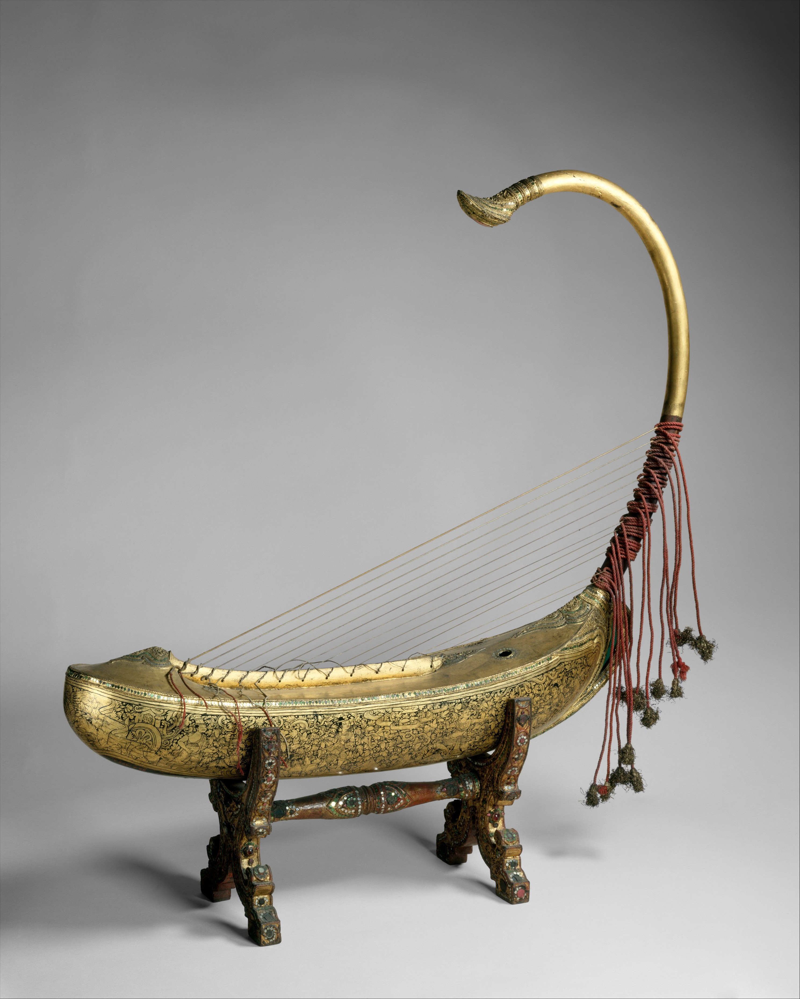
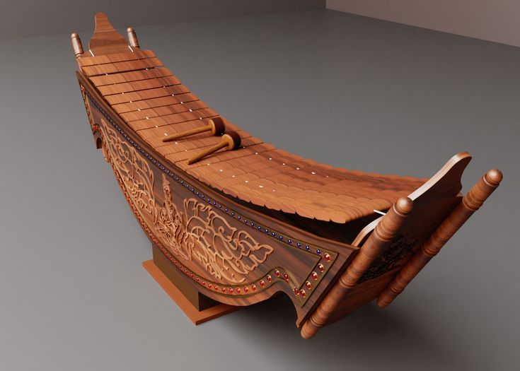
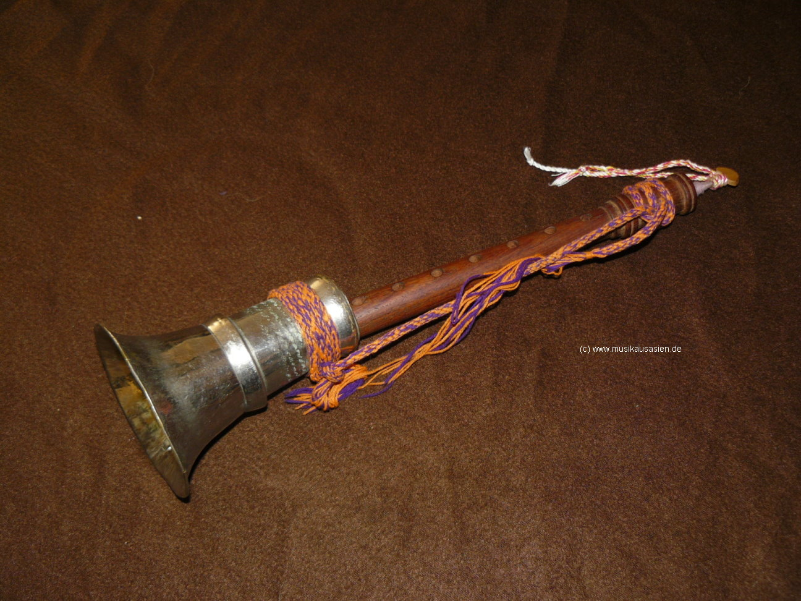

Traditional Instruments

Saung-gauk
The arched harp of Myanmar, known for its graceful shape and delicate, soothing tones.

Pattala
A traditional xylophone with bamboo slats, providing the bright melodic foundation of many songs.

Hne
A multiple-reed oboe that provides the sharp, vibrant leading voice in the ensemble.